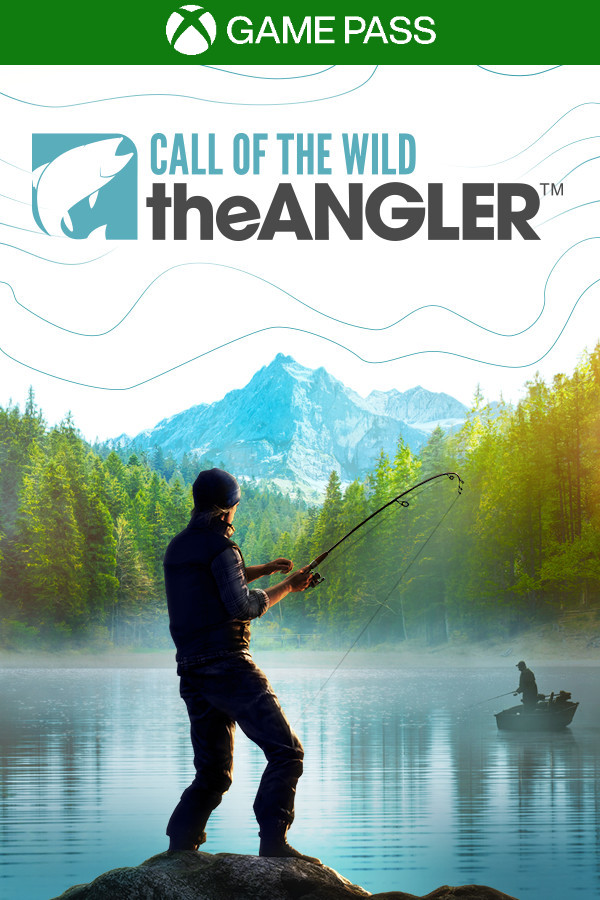

Call of the Wild: The Angler
Call of the Wild: The Angler
Detalhes
|  | |
| Tempo de jogo | Não Jogado |
| Última Atividade | Nunca |
| Adicionado | 18/04/2024 21:08:50 |
| Modificado | 10/03/2025 0:51:33 |
| Status de Conclusão | Not Played |
| Biblioteca | Epic |
| Fonte | Epic |
| Plataforma | PC (Windows) |
| Data de Lançamento | 31/08/2022 |
| Pontuação da Comunidade | |
| Avaliação da crítica | 63 |
| Pontuação do Usuário | |
| Gênero | Fishing Hunting Sports |
| Desenvolvedor | Expansive Worlds |
| Editor | Expansive Worlds |
| Funções | Online 12-Player Multiplayer Online Co-Op Multiplayer Online Versus Multiplayer |
| Links | PCGamingWiki Official site HowLongToBeat IGDB SteamDB MobyGames |
| Tag | [EMT] Video Micro missing [HLTB] 10 a 20 horas |
Descrição
Discover breathtaking fishing spots across sprawling waterways by foot, boat, or off-road vehicle. Traverse a living world at your own pace, discovering winding rivers, soaring peaks, hidden ponds and springs, and epic hiking trails. Battle fierce Largemouth Bass, Mountain Whitefish and more in an engaging, accessible fishing experience. Each species has its own unique behavior, requiring you to carefully counter their movements to reel them in. Become a Master Angler and learn expert techniques and adapt your strategy to land the most challenging catches. Build out your collection of gear and use a wide range of rods, fully customizable with a growing selection of reels, lines, floats, hooks, lures, and bait. Ride the open waters on your own or share the journey with friends in online drop-in/drop-out co-op multiplayer for up to 12 players. Team up with fellow anglers and go on unforgettable journeys together!